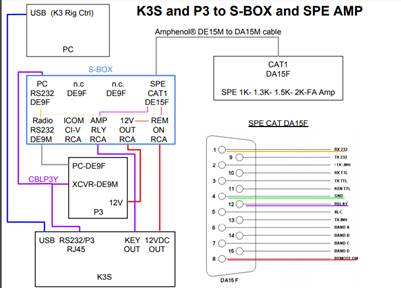

Hi Bob. I have the y-Box but right now I don’t use a P3. I have the rj45/rs232 and Acc from the K3s going to the spe. I’m thinking that I can use the usb direct from the pc for control and audio. But I’m looking at this picture:

With the rs232 and ACC being used for the SPE, will I have a conflict with TXD when using the USB and how would the S-Box solve the situation. Thanks.
Paul, W6IBU
From: Bob Wilson, N6TV [mailto:n6tv@arrl.net]
Sent: Wednesday, March 27, 2019 11:07 AM
To: Paul Booth; NCDXC Reflector
Subject: Re: [NCDXC Chat] K3s, SPE and FT8
Hi Paul,
As W6GJB mentioned, I make a box for this situation, which you may or may not need depending on what else you need to connect.
On Tue, Mar 26, 2019 at 5:14 PM Paul Booth via Chat <chat@ncdxc.org> wrote:
I currently us a K3 (upgraded to K3S) with a SPE Expert amp. That means my serial and ACC port are tied up between the SPE and K3S.
I guess you're using one of the KC5PCB interface cables. These are not needed if you have an S-BOX. The S-BOX also provides an FSK keying interface compatible with the K3 and MMTTY (for proper FSK RTTY, no need to use paddle).
I’m looking at trying FT8 and believe it or not I don’t have a computer connected to any of this, yet. I even do RTTY but with the cw paddle. So I’ve seen several configurations options:
1) Can the PC audio in/out be tied directly to the K3 with an external audio “card”? Seems like it could though the audio in on the K3 is mono and the audio out on the PC is stereo.
Since you've upgraded to a K3S, you already have an external USB Sound Card, and it's already built-in to the K3. It shows up in the Windows Device Manager as "USB Audio CODEC" and can be used for FT8 (TX and RX), and for AFSK RTTY (RX and TX), or for FSK RTTY (RX Only).
If you connect anything to the LINE IN or LINE OUT jacks on the K3S, the USB Sound Card is MUTED, so don't connect anything to LINE IN or LINE OUT.
2) Some of you have mentioned using an external audio “card” though the stereo out is still a question. If #1 above can be done why use an external audio interface.
There is no need to use any external audio device with a K3S since it has an internal USB sound card.
3) I think you can run USB-PC to USB-K3s directly and not have any audio connections with audio and control both passing through USB.
Correct.
I like this and seems the most straightforward. However I think you have to choose between RS232 and USB on the K3 so this may not be possible as long as I need the RS232 for the SPE.
It works fine if you set CONFIG:RS232 to USB and open the "TXD" switch on the SPE CAT connector (DE-15M) so that the SPE amp. stops polling the K3 for frequency data. You have to run a logging program that polls the K3 for frequency data to make this work (or you can set CONFIG:AUTOINF to AUTO 1), otherwise the SPE will stop tracking.
4) And I guess the same question for all of the above if I have to choose between RS232 or USB.
Use both. In sum:
Set CONFIG:RS232 to USB, connect USB cable to PC, connect RJ-45 to DE-9 pigtail to P3, choose USB Audio CODEC as the RX and TX Sound cards, SET MAIN:MIC SEL to LINE IN (for digital) connect SPE cable or S-BOX to the RJ45-to-Serial Pigtail, and open the "TXD" switch on the SPE connector (if using KC5PCB cable).
Sample connection diagram including SPE amp. and P3 via S-BOX is shown here:
What else do you need to connect? Band Decoder? SteppIR Controller? FSK Keying interface? An FSK (RTTY) keying interface is also included inside the S-BOX and S-BOX-USB. The Y-BOX mentioned by W6GJB is for splitting the 15-pin ACC port.
73,
Bob, N6TV